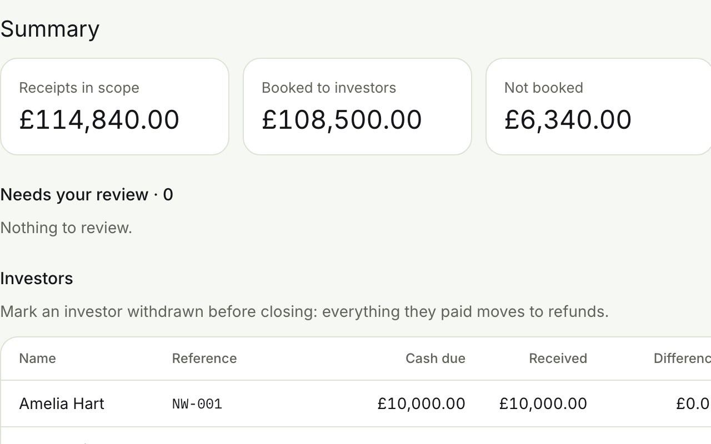

Step 1 · Reconciliation
Every receipt matched, or explained
Import the investor list and the bank statement. A receipt is booked automatically only when its reference contains exactly one investor's payment reference; everything else is a suggestion with a score and reasons, and a person confirms it.

In the app: three suggested matches confirmed, and the summary updates.